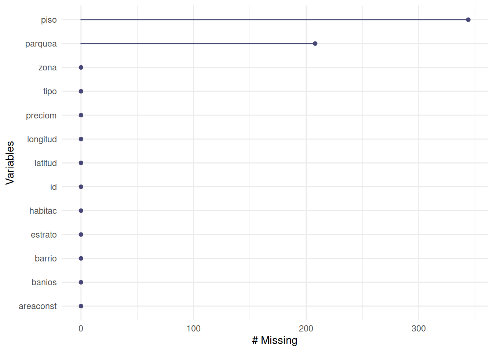
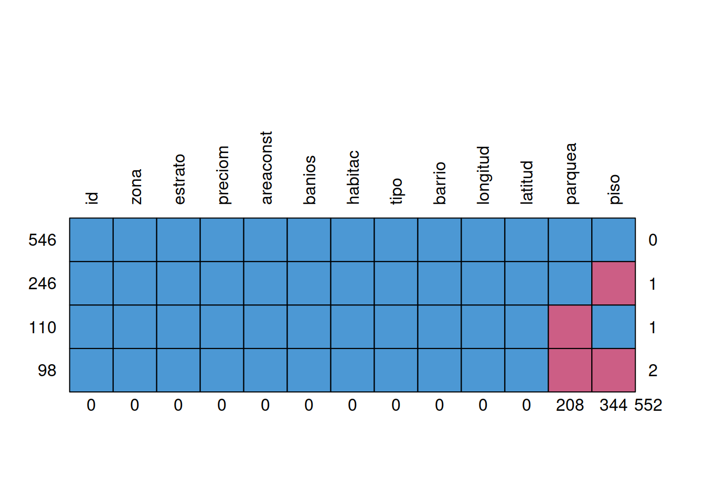
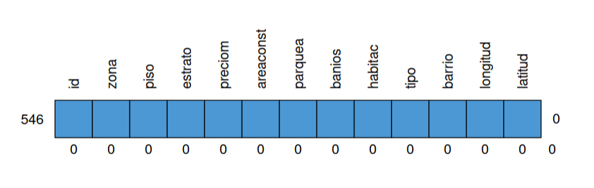
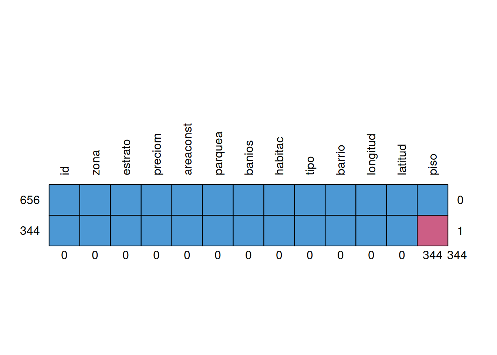
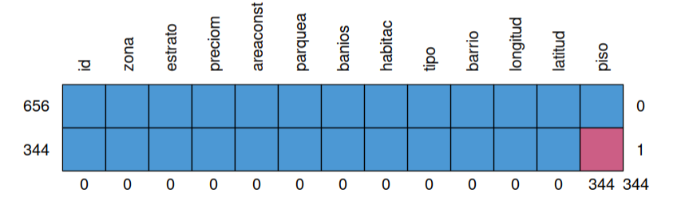
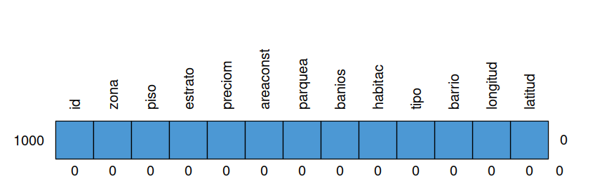

Una de las tareas más importante al realizar un proyecto de Ciencia de Datos corresponde a la preparación de los datos (Limpieza de datos o data cleaning) que posteriormente va a permitir el modelamiento adecuado de los datos.
Este ciclo comprende :
Al importar una base de datos que está conformada por una matriz con \(n\) filas o registros y \(m\) columnas o variables se presentan problemas relacionados con:
A contunuación se presentan algunos de estos temas que permiten tratar y dejar lista la base de datos de interes para iniciar el análisis de datos
El tratamiento de datos faltantes es un aspecto crítico en Ciencia de Datos, ya que ellos pueden afectar de manera significativa la calidad y validez de los análisis y modelos que realicemos. Acontinuación se presentan algunas estrategias comunes para manejar los datos faltantes:
Si los datos faltantes son pocos en comparación con el tamaño total del conjunto de datos, una estrategia es eliminar los registros o filas que contienen datos faltantes. Sin embargo, esta estrategia puede llevar a una pérdida de información si los datos faltantes son sistemáticos o si se eliminan muchas observaciones en comparación con el tamaño de la base de datos.
La imputación implica estimar y reemplazar los valores faltantes con valores razonables. Esto se puede realizar de diferentes maneras, como :
Se reemplazan los datos faltantes por la media o la mediana en el caso de variables numéricas o por el valor más frecuente de la variable correspondiente (moda), en el caso de las variables cualitativas.
Los valores faltantes pueden ser reemplazados por valores obtenidos a a partir modelos, donde se construyen para estimar los valores faltantes de manera predictiva.
En el caso de variables categóricas o cualitativas sus valores faltantes se pueden encontrar a partir del modelamiento la subbase con registros completos
los datos faltantes pueden tener un significado propio y no deben ser imputados ni eliminados. En lugar de eso, puedes considerar tratar los datos faltantes como una categoría adicional en el análisis o modelo.
Existen métodos Aavanzados para imputar datos faltantes, como la imputación múltiple (multiple imputation) y la imputación basada en modelos de aprendizaje automático. Estos enfoques generan múltiples conjuntos de datos imputados y tienen en cuenta la incertidumbre asociada con la imputación.
Es importante evaluar cuidadosamente el patrón y la naturaleza de los datos faltantes antes de decidir qué estrategia utilizar. Además, es fundamental tener en cuenta que los método de imputación introduce incertidumbre y puede afectar los resultados de los análisis o modelos. Por lo tanto, es recomendable documentar y tener en cuenta el proceso de imputación en el análisis y la interpretación de los resultados.
A partir de la base de datos vivienda_faltantes contenida en paqueteMET, se plantera examinar una muestra de ella de tamaño 1000 x 13 que se puede obtener con el siguiente código :
library(paqueteMET)
library(dplyr)
data("vivienda_faltantes")
set.seed(123)
datosNA<-sample_n(vivienda_faltantes, 1000)
str(datosNA)spc_tbl_ [1,000 × 13] (S3: spec_tbl_df/tbl_df/tbl/data.frame)
$ id : num [1:1000] 122 190 880 1663 1401 ...
$ zona : chr [1:1000] "Zona Norte" "Zona Oriente" "Zona Oriente" "Zona Sur" ...
$ piso : num [1:1000] 1 4 1 NA NA 1 7 NA 2 4 ...
$ estrato : num [1:1000] 3 3 3 4 4 5 5 3 5 3 ...
$ preciom : num [1:1000] 150 360 250 375 150 270 290 235 450 125 ...
$ areaconst: num [1:1000] 93 420 210 74 57 75 93 122 252 72 ...
$ parquea : num [1:1000] NA 1 NA 1 NA 1 1 1 2 NA ...
$ banios : num [1:1000] 1 6 4 5 2 2 3 2 2 2 ...
$ habitac : num [1:1000] 4 9 4 5 3 3 3 5 7 3 ...
$ tipo : chr [1:1000] "Casa" "Casa" "Apartamento" "Casa" ...
$ barrio : chr [1:1000] "la rivera" "las ceibas" "morichal de comfandi" "calicanto viii" ...
$ longitud : num [1:1000] -76.5 -76.5 -76.5 -76517 -76.5 ...
$ latitud : num [1:1000] 3.48 3.46 3.4 3373 3.38 ...
- attr(*, "spec")=
.. cols(
.. id = col_double(),
.. zona = col_character(),
.. piso = col_double(),
.. estrato = col_double(),
.. preciom = col_double(),
.. areaconst = col_double(),
.. parquea = col_double(),
.. banios = col_double(),
.. habitac = col_double(),
.. tipo = col_character(),
.. barrio = col_character(),
.. longitud = col_double(),
.. latitud = col_double()
.. )
- attr(*, "problems")=<externalptr> Como se observa con la función str() obtenemos una
visualización del tamaño de la base de datos, las variables que la
conforman y el tipo de variables y una muesrta de los primeros
valores.
Existen diferentes formas de visualizar los datos faltantes
faltantes <- colSums(is.na(datosNA))
faltantes id zona piso estrato preciom areaconst parquea banios
0 0 344 0 0 0 208 0
habitac tipo barrio longitud latitud
0 0 0 0 0 Esta función muestra el número total de datos faltantes por variable
# install.packages("naniar")
library(naniar)
gg_miss_var(datosNA)
En esta gráfica podemos visualizar que las viables piso y parquea presentan datos faltantes, la primera al rededor de 340 y la segunda un poco más de 200 datos faltantes.
# install.packages("mice")
library(mice)
grafico <-md.pattern(datosNA, rotate.names = TRUE)
En la gráfica generada por la función md.pattern() del
paquete mice representa la base de datos, se observa que
546 registros tienen informaciçon completa (sin datos faltantes), se
presentan 246 registros con datos faltantes en la variable piso, 110
registros les hace falta información en la variables parqueadero y a 98
registros les hace falta información en dos variables (parqueadero y
piso)
La función : na.omit() , permite elimitar todos los
registros contenidos en la base de datos que contenga datos faltantes
(NA) c
# install.packages("mice")
library(mice)
datosSINA <- na.omit(datosNA) # elimina todos los valores con NA
grafico <-md.pattern(datosSINA, rotate.names = TRUE)
Si no se desea eliminar los registros que contiene datos faltantes, dado que se puede perder un gran porcentaje de la información, entoces se recurre a reemplazar estos valores, primero calculado el valor por el cual se debe reemplazar,
En este primer caso puede se trater de falta de información o que los propietarios entendieron que no debian responder la pregunta, pues su vivienda no posee parqueadero. En otros casos es posible que se trate de un dato faltante real y se deba reeplazar por la media por ejemplo
El caso de reemplazar el NA por cero procederemos así:
datosNA$parquea[is.na(datosNA$parquea)] <- 0
grafico <-md.pattern(datosNA, rotate.names = TRUE)
En el caso de reemplazar el NA por el valor correspondiente a la media se asigna este valor de la siguiente manera:
# Calcula la media de la variable "parquea"
media_parquea <- mean(datosNA$parquea, na.rm = TRUE)
datosNA$parquea[is.na(datosNA$parquea)] <- media_parquea
grafico <-md.pattern(datosNA, rotate.names = TRUE)
# install.packages("DescTools")
library(DescTools)
moda_piso <- Mode(datosNA$piso, na.rm = TRUE)
datosNA$piso[is.na(datosNA$piso)] <- moda_piso
grafico <-md.pattern(datosNA, rotate.names = TRUE)
Las otras tecnicas la iremos incorporando en las siguientes unidades